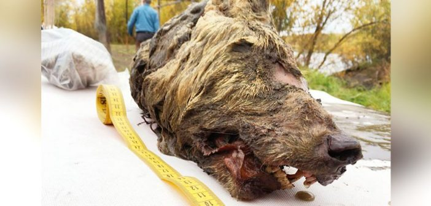
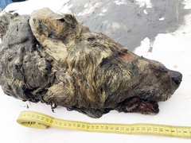

Una cabeza de lobo gigante de hace 40,000 años ha sido encontrada en Siberia
17 JUNIO, 2019
17 JUNIO, 2019
Un hombre local, cerca del río Tirekhtyakh, en el este de Siberia, encontró una gran cabeza de lobo de 40 000 años. Debido a que la cabeza estaba increíblemente bien conservada, el descubrimiento presenta una rara oportunidad para profundizar en la genealogía y evolución de los lobos.
Este descubrimiento es asombroso, dijo a Gizmodo Julie Meachen, paleontóloga y profesora de la Universidad de Des Moines que se especializa en la evolución de los lobos antiguos (pero que no está involucrada en este hallazgo).
El espécimen, que según los científicos creció completamente cuando murió entre los 2 y 4 años de edad, probablemente fue temible a la vista. Hoy en día, una cabeza de lobo promedio mide entre 23 y 28 centímetros de largo. Mientras tanto, la cabeza encontrada mide 40 centímetros lo que hace que sea diferente a cualquier espécimen de lobo existente que los científicos hayan estudiado desde hace mucho tiempo.
Se piensa que las presas de este animal eran tan grandes como caballos y bisontes, al igual que otras razas antiguas, como los lobos gigantes, que eran reales y existían hace miles de años, mucho antes de Game of Thrones.
Mechen dice que este lobo probablemente no sea un lobo gigante, pero habrá más evidencia concluyente sobre el antiguo depredador disponible después de que los científicos del Museo Sueco de Historia Natural extraigan parte de su ADN.
Si bien no es raro que se produzcan descubrimientos como este en el desierto de Siberia, es raro encontrar un espécimen en este nivel de conservación.
Me hizo querer ir a Siberia y buscar más especímenes de la Edad de Hielo, dijo Meachen. ¡Parece que murió ayer! Nunca antes hemos visto a un lobo de la Edad de Hielo con carne y este es un gran espécimen.